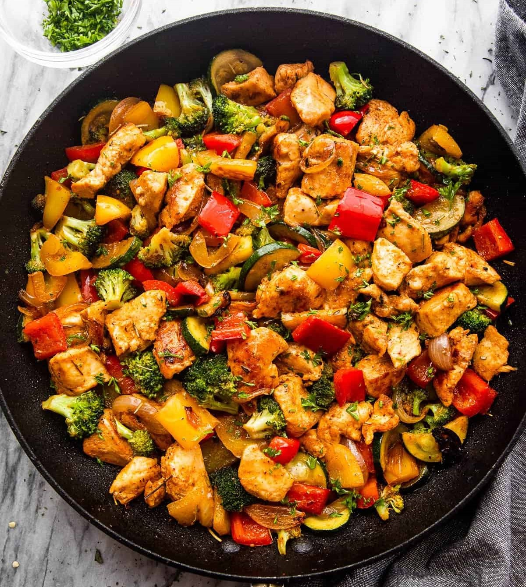
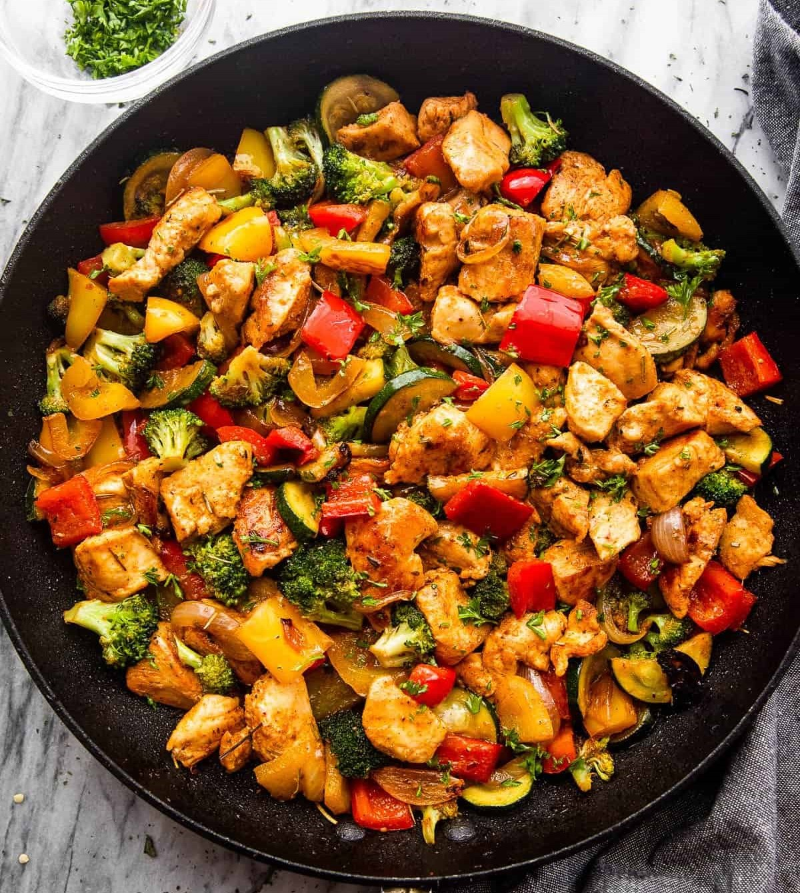

Description
This Chicken Vegetable Skillet Pasta is super quick and easy to make. It uses simple ingredients for a meal the whole family will love!
Ingredients
- 8 oz uncooked dried penne pasta
- 3 tbsp olive oil divided
- 1 lb boneless, skinless chicken cut
- 1 tsp salt
- ½ tsp pepper
- 1 red, yellow and orange pepper chopped
- 2 cloves garlic
- 2 medium shallots diced
- 2 tbsp balasmic vinegar
- 1btsp lemon juice
- 1 tbsp fresh or dried parsley
Steps
- Cook penne according to the package directions. Once cooked, measure out ½ cup of the pasta water and set aside for later. Drain the pasta and set aside.
- Meanwhile, in a large skillet, heat 2 tablespoons of olive oil over medium heat.
- Add chicken to pan and cook for approximately 5 to 8 minutes, stirring occasionally. until juices run clear and chicken is no longer pink.
- Add red, yellow, orange peppers and shallots to pan. Cook for 5 minutes, allowing peppers and shallots to brown on edges. Add garlic and cook for 1 minute longer.
- Add balsamic vinegar, lemon juice, 1 tablespoon olive oil and ½ cup reserved pasta water and cooked penne pasta to pan. Cook for 4 minutes.
- Transfer to a large serving bowl or platter.
- Sprinkle with fresh or dried parsley.